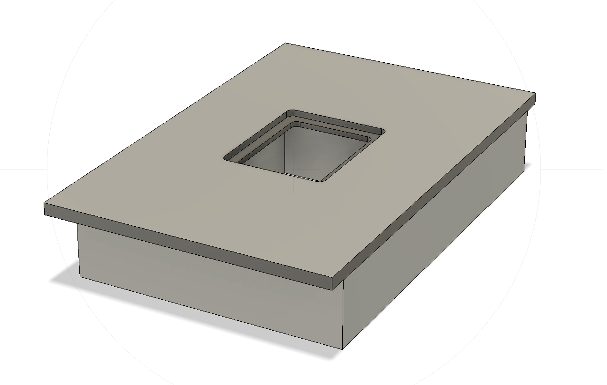
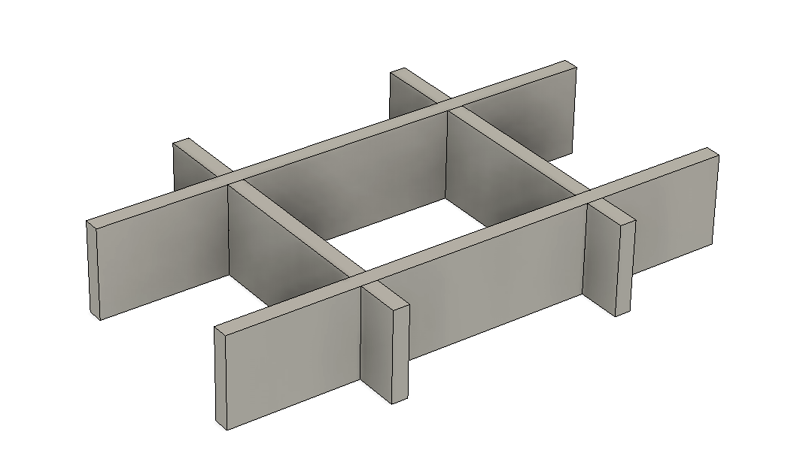
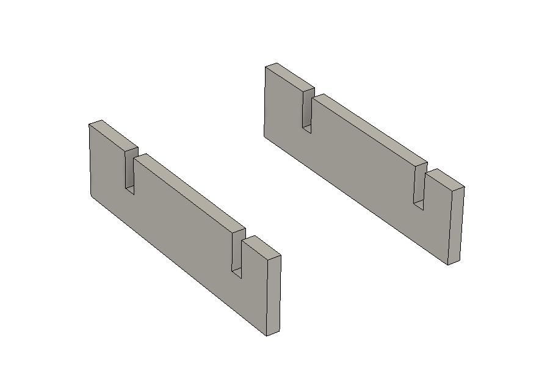
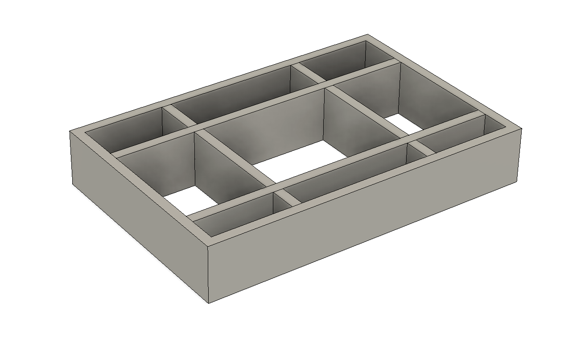
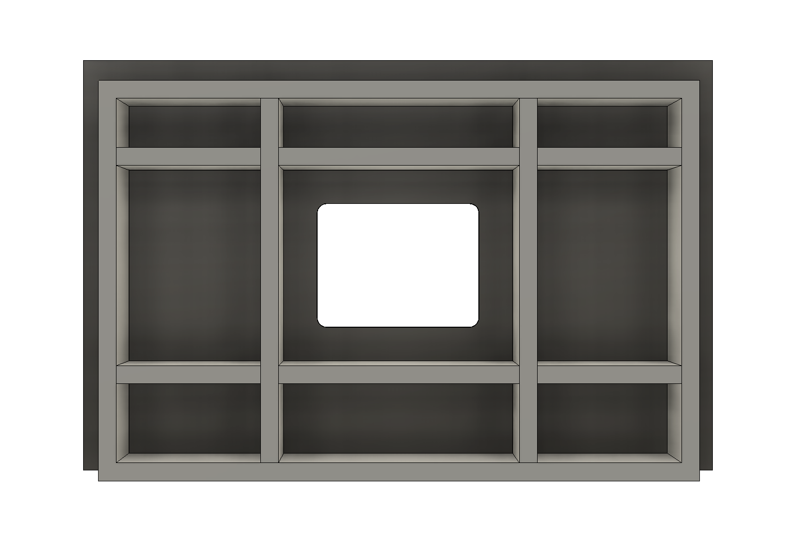

Ontwerp
Aan de hand van de uitgangspunten is gestart met een uitwerking in een model. Om het ontwerp aanpasbaar te maken is rekening gehouden met enkele parameters.
Model
Het model is opgezet met behulp van Fusion 360. Nadat dit pakket geinstalleerd is kan het model hier gedownload worden. Open dit model met Fusion 360 en je kunt met 'Modify -> Change Parameters' de parameters naar wens aanpassen.
Parameters
- mod_* parameters kan men afstemmen op een eventuele module of onderstel.
| Parameter | Waarde (mm) | Omschrijving |
|---|---|---|
| mod_breedte | 600 | Breedte (buitenmaat) van module/onderstel |
| mod_diepte | 400 | Diepte (buitenmaat) van module/onderstel |
| mod_hoogte | 100 | Hoogte van module/onderstel |
| blad_overstek | 30 | Overstek van blad buiten module/onderstel |
| blad_dikte | 18 | Totale dikte van het blad. Blad kan in 2 delen gestapeld (verlijmt) zijn |
| torsionbox_dikte | 18 | Dikte van plaatmateriaal torsion box |
| torsionbox_hoogte | 100 | Hoogte van torsion box |
| inlegplaat_breedte | 200 | Buitenmaat breedte inlegplaat |
| inlegplaat_diepte | 160 | Buitenmaat diepte inlegplaat |
| inlegplaat_dikte | 10 | Dikte inlegplaat |
| inlegplaat_hoekradius | 10 | Radius van de hoek van de inlegplaat |
| inlegplaat_center_offset | 215 | Afstand van middelpunt frees tot voorkant blad |
Blad en torsion box





